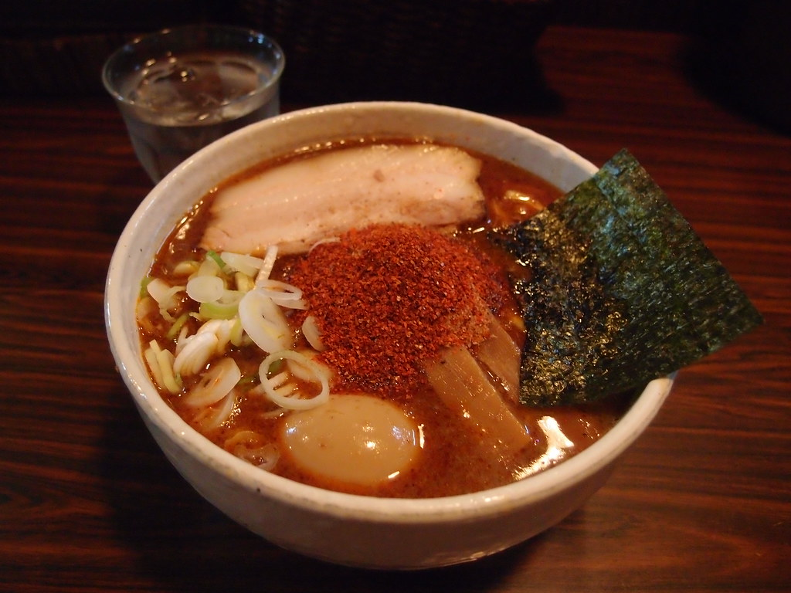

This is a recipe for Ramen.
Ramen is a Japanese noodle soup dish that has become popular worldwide. It typically consists of Chinese-style wheat noodles served in a meat or fish-based broth , often flavored with soy sauce or miso, and uses toppings such as sliced pork, nori (dried seaweed), menma (bamboo shoots), and scallions.
Ramen originated in China and was introduced to Japan in the late 19th century. It has since evolved into a distinct Japanese dish with various regional variations across Japan. Ramen has gained international popularity and can be found in many countries around the world.
The name "ramen" is derived from the Chinese word lamian, which means "hand-pulled noodles." Ramen is often enjoyed as a quick and satisfying meal, and it has become a cultural icon in Japan and beyond.
There are many different types of ramen, including shoyu (soy sauce), miso, shio (salt), and tonkotsu (pork bone) ramen, each with its own unique flavor profile and ingredients.
Back to the main page here